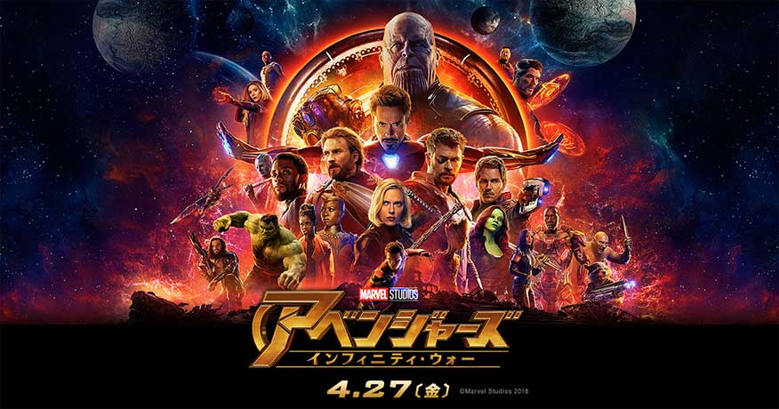
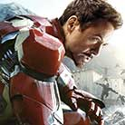
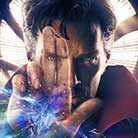
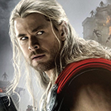

最強を超える！ラスボス・サノスとの闘いへ・・・！
６つすべてを手に入れると世界を滅ぼす無限大の力を得るインフィニティ・ストーン。その究極の力を秘めた石を狙う“最凶”にして最悪の敵サノスを倒すため、アイアンマン、キャプテン・アメリカ、スパイダーマンら最強ヒーローチーム“アベンジャーズ”が集結。人類の命運をかけた壮絶なバトルの幕が開ける。果たして、彼らは人類を救えるのか？今、アベンジャーズ全滅へのカウントダウンが始まる！
宇宙にうごめく悪の背後に存在し続けてきた最凶最悪の〈ラスボス〉。 地球を破壊できるほどの圧倒的なパワーを持つ彼の出現により、地球壊滅、アベンジャーズ全滅の危機が迫る…！
|  | ロバート・ダウニー・Jr |
|---|---|
| （Robert Downey, Jr., 1965年4月4日 - ）は、アメリカ合衆国の俳優・声優・ミュージシャン・プロデューサー。身長173cm。 ●主な出演作品：キスキス,バンバン、シャーロック・ホームズ |
|
|  | ベネディクト・カンバーバッチ |
| （Benedict Timothy Carlton Cumberbatch[1], CBE, 1976年7月19日[1] - ）は、イギリスの俳優。イングランド・ロンドン・ハマースミス出身。 ●主な出演作品：SHERLOCK（シャーロック）、イミテーション・ゲーム/エニグマと天才数学者の秘密。 |
|
|  | クリス・ヘムズワース |
| （Chris Hemsworth、1983年8月11日 - ）は、オーストラリアの俳優。身長191cm。 ●主な出演作品：スター・トレック、スノーホワイト。 |
Copyright© HAL ALLRIGHTS RESERVED.